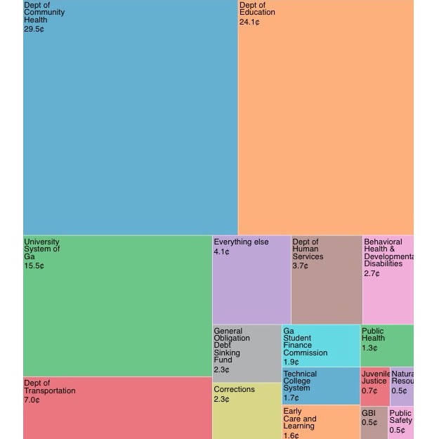
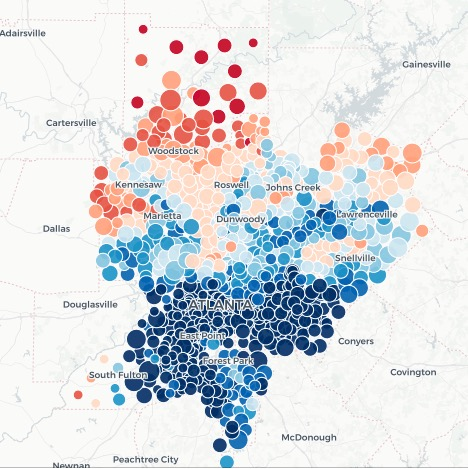
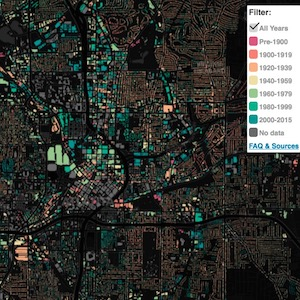
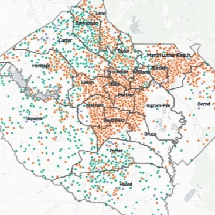
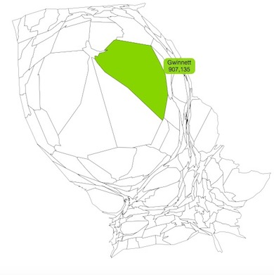
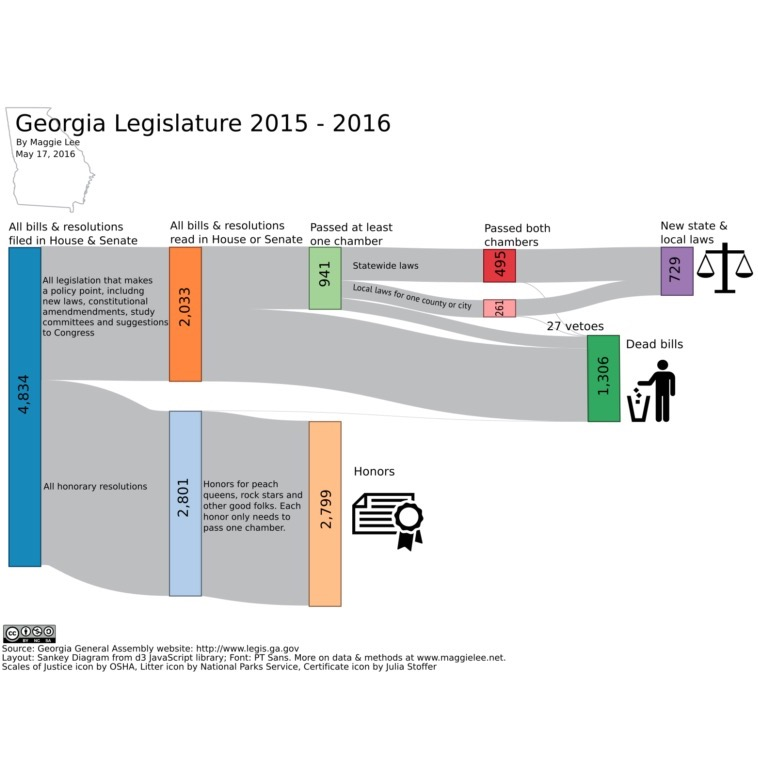
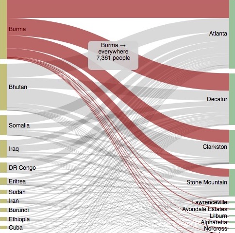

Hi, I'm a freelance reporter who covers state and metro government in Atlanta.
Print bylines in McClatchy's Georgia papers, SaportaReport, Creative Loafing and others.
Also, I do maps and data visualizations.
Resume
maggie.a.lee[ at ]gmail.com
Phone & signal: 404-five three eight-2740


If Georgia's budget were $1

If Georgia's budget were $1, health care and education would get quarters. Most other things would get pennies.
Chart as svg
Archived version of April, 2019 story for SaportaReport.com
Developed with Observable
Ingredients: D3.js, Excel
Why metro Atlanta's vote matters so much, in a map

North Cherokee and south Fulton give some idea what other parts of the state are like compared to inner metro Atlanta: much redder but much less populous.
Archived version of November, 2018 story for SaportaReport.com
Published via Carto
Ingredients: QGIS, Carto, esri2geojson, scraping

A clickable building age map.
Archived version of December, 2017 story for SaportaReport.com
Code on Github
Ingredients: QGIS, spatial join, map, Carto, Carto.js, Leaflet, JavaScript, geojson, HTML, CSS, Python, web scraping, Flask, Jinja
What would Bibb schools' racial makeup be if everyone went to their zoned school?

Maps for a series about public school re-segreation, done by Georgia Public Broadcasting and the Macon Telegraph.
December, 2017 story for the Macon Telegraph (possible paywall)
Published via Carto
Ingredients: QGIS, Carto, CSV, Census
Georgians squeeze into metro Atlanta. Here's how much:

A personal project, just trying out a county map with the counties sized by 2016 population.
Interactive version
Code on Github
Ingredients: Cartogram, cartoram.js, D3.js, HTML, CSS
Atlanta and Georgia politics Twitter bot
@GaPolBot monitors public Georgia and Atlanta public agency websites and RSS feeds and tweets what it finds. Like, the governor's executive orders and state environmental fines.
Ingredients: Python, Twitter, bot, Tweepy
Georgia lawmakers wrote ~4,800 things, mostly honors

Another personal project, from 2016. I wanted to show what gets filed and handled in the Georgia Legislature. I wrote a little Python script to scrape, then categorize, these bills. D3.js did the heavy lifting on drawing the chart. It's finished and annotated in Photoshop.
Chart as png
Code on Github
Ingredients: Python, web scraping, D3.js, Photoshop
About 26,000 refugees moved to Georgia in 10 years. Here's where most came from and went to in metro Atlanta

A chart created for the AJC in 2016, though that page has succumbed to link rot :(
Archived version
Code on Github
Ingredients: D3.js, JavaScript, HTML, CSS, CSV
Excel is for reporters, not just accountants
Eight newsroom hacks that don't require coding
How to schedule a Python script in a piece of cloud, using an Amazon AWS EC2 instance (a tiny virtual server) and cron (a scheduler that is built into it.)